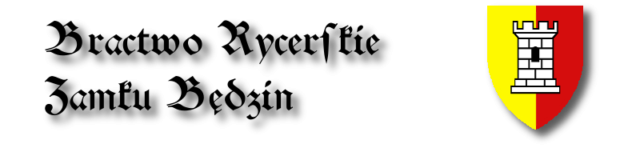

|  |
||||
|
Bractwo Rycerskie Zamku Bêdzin jest stowarzyszeniem rekonstrukcji historycznej. Bractwo zajmuje siê odtwórstwem historycznym ¶redniowiecza prze³omu XIV i XV wieku. Koncentrujemy siê zarówno na rekonstrukcji kultury materialnej okresu pó¼nego ¶redniowiecza, jak i dzia³alno¶ci sportowej zwi±zanej z Ruchem Rycerskim w postaci ró¼nego rodzaju turniejów rycerskich, pokazów, buhurtów (melee). Rokrocznie organizujemy turniej na zamku w Bêdzinie, jak równie¿ ogólnopolskie jak i regionalne manewy buhurtowe. Herbem bractwa jest bia³a wie¿a zamkowa w polu z³oto-czerwonym. Herb ów symbolizuje zamek bêdziñski i jego wie¿ê ostatecznej obrony. Symbolika herbu nawi±zuje do historycznej roli zamku, który powsta³ i by³ rozbudowywany jako nadgraniczna warownia broni±ca zachodnich rubie¿y Ma³opolski. Wie¿a ta oznacza niez³omne stanie przez nasze bractwo na stra¿y tradycji naszego zamku oraz kultywowanie jego barwnej historii. Z³oto-czerwone barwy jego pola s± barwami Królewskiego Miasta Bêdzina. Ostatnia aktualizacja 20-12-2010 |
|||
|
|
||||